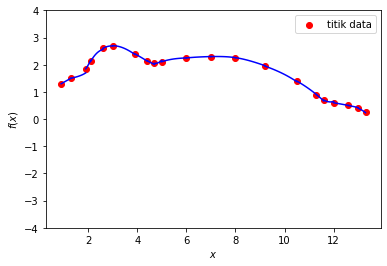

Solusi UTS Komputasi Sains¶
import numpy as np
A = np.array([[1, 0, -1],
[-0.5, 1, -0.25],
[1, -0.5, 1]])
def diagonal(A):
n = A.shape[0]
D = np.zeros_like(A)
for i in range(n):
D[i,i] = A[i,i]
return D
def lower(A):
n = A.shape[0]
L = np.zeros_like(A)
for i in range(n):
for j in range(n):
if i > j:
L[i,j] = -A[i,j]
return L
def upper(A):
n = A.shape[0]
U = np.zeros_like(A)
for i in range(n):
for j in range(n):
if i < j:
U[i,j] = -A[i,j]
return U
def spectral_radius(T):
eigval = np.linalg.eigvals(T)
rho = np.max(np.abs(eigval))
return rho
D = diagonal(A)
L = lower(A)
U = upper(A)
print("{} \n\n {} \n\n {}".format(D, L, U))
[[1. 0. 0.]
[0. 1. 0.]
[0. 0. 1.]]
[[ 0. 0. 0. ]
[ 0.5 0. 0. ]
[-1. 0.5 0. ]]
[[ 0. -0. 1. ]
[ 0. 0. 0.25]
[ 0. 0. 0. ]]
Tj = np.matmul(D, (L+U))
Tj
array([[ 0. , 0. , 1. ],
[ 0.5 , 0. , 0.25],
[-1. , 0.5 , 0. ]])
spectral_radius(Tj)
0.972105210338831
X = np.linalg.inv(D - L)
Tgs = np.matmul(X, U)
Tgs
array([[ 0. , 0. , 1. ],
[ 0. , 0. , 0.75 ],
[ 0. , 0. , -0.625]])
spectral_radius(Tgs)
0.625
from scipy.linalg import norm
def jacobi1(A, b, x0, epsilon=1e-5, N=1000):
x = np.zeros(len(b))
T = A - np.diag(np.diagonal(A))
for k in range(N):
x = (b - np.dot(T,x0))/np.diagonal(A)
if norm(np.dot(A,x) - b) < epsilon:
break
x0 = x
return k,x
def gauss_seidel(A, b, x0, epsilon=1e-5, N=1000):
x = np.zeros_like(b, dtype=np.double)
for k in range(N):
for i in range(len(b)):
U = np.dot(A[i,:i], x[:i])
V = np.dot(A[i,(i+1):], x0[(i+1):])
x[i] = 1/A[i,i] * (b[i] - U - V)
#print(k,x)
if norm(np.dot(A,x) - b) < epsilon:
break
x0 = x
return k,x
a.
A = np.array([[2, -1, 1],
[2, 2, 2],
[-1, -1, 2]], dtype = np.double)
b = np.array([-1, 4, -5], dtype = np.double)
HasilGS = gauss_seidel(A, b, x0=np.zeros(A.shape[0]))
HasilGS
(22, array([ 1.00000226, 1.9999975 , -1.00000012]))
HasilJ = jacobi1(A, b, x0=np.zeros(A.shape[0]))
HasilJ
(999, array([-1.71063658e+48, -6.84254632e+48, 1.71063658e+48]))
Kenapa?
D = diagonal(A)
L = lower(A)
U = upper(A)
print("{} \n\n {} \n\n {}".format(D, L, U))
[[2. 0. 0.]
[0. 2. 0.]
[0. 0. 2.]]
[[ 0. 0. 0.]
[-2. 0. 0.]
[ 1. 1. 0.]]
[[ 0. 1. -1.]
[ 0. 0. -2.]
[ 0. 0. 0.]]
Untuk Jacobi
\(T_J = D^{-1}(L + U)\)
D_invers = np.linalg.inv(D)
Tj = np.matmul(D, (L + U))
Tj
array([[ 0., 2., -2.],
[-4., 0., -4.],
[ 2., 2., 0.]])
spectral_radius(Tj)
4.472135954999577
Karena \(\rho (T_J) > 1\) maka menghasilkan barisan solusi yang divergen.
Untuk Gauss-Seidel
\(T_{GS} = (D - L)^{-1} U\)
DL_invers = np.linalg.inv((D-L))
Tgs = np.matmul(DL_invers, U)
Tgs
array([[ 0. , 0.5, -0.5],
[ 0. , -0.5, -0.5],
[ 0. , 0. , -0.5]])
spectral_radius(Tgs)
0.5
Karena \(\rho (T_{GS}) < 1\) maka menghasilkan barisan solusi yang konvergen.
b.
A = np.array([[1, 2, -2],
[1, 1, 1],
[2, 2, 1]], dtype=np.double)
b = np.array([7, 2, 5], dtype=np.double)
HasilGS = gauss_seidel(A, b, x0=np.zeros(A.shape[0]))
HasilGS
(999, array([ 1.60887017e+304, -1.60940593e+304, 1.07150861e+301]))
HasilJ = jacobi1(A, b, x0=np.zeros(A.shape[0]))
HasilJ
(2, array([ 1., 2., -1.]))
Kenapa?
D = diagonal(A)
L = lower(A)
U = upper(A)
print("{} \n\n {} \n\n {}".format(D, L, U))
[[1. 0. 0.]
[0. 1. 0.]
[0. 0. 1.]]
[[ 0. 0. 0.]
[-1. 0. 0.]
[-2. -2. 0.]]
[[ 0. -2. 2.]
[ 0. 0. -1.]
[ 0. 0. 0.]]
Untuk Jacobi
D_invers = np.linalg.inv(D)
Tj = np.matmul(D, (L + U))
Tj
array([[ 0., -2., 2.],
[-1., 0., -1.],
[-2., -2., 0.]])
spectral_radius(Tj)
3.760323764989386e-06
Karena \(\rho (T_J) < 1\) maka menghasilkan barisan solusi yang konvergen.
Untuk Gauss-Seidel
DL_invers = np.linalg.inv((D-L))
Tgs = np.matmul(DL_invers, U)
Tgs
array([[ 0., -2., 2.],
[ 0., 2., -3.],
[ 0., 0., 2.]])
spectral_radius(Tgs)
2.0
Karena \(\rho (T_{GS}) > 1\) maka menghasilkan barisan solusi yang divergen.
import matplotlib.pyplot as plt
def cubic_spline(data):
n = len(data) - 1
data = np.array(data)
# Nilai dari koef. a diketahui dari titik data atau input yaitu a_j = f(x_j)
a = [data[i, 1] for i in range(n+1)]
a = np.array(a)
h = [(data[i+1,0] - data[i,0]) for i in range(n)]
# Membentuk matriks A
A = np.zeros((n+1,n+1))
for i in range(1, n):
for j in range(0, n):
if j < i:
for k in range(j):
A[i,k] = 0
A[i,j] = h[j-1]
elif j > i:
for k in range(j):
A[k,j] = 0
A[i,j] = h[j]
A[i+1, j+1] = h[j]
else:
A[i,i] = 2*(h[j-1] + h[j])
A[0, 0] = 1
A[n, n] = 1
A[:n-1, n] = 0
# Membentuk vektor b
b = np.zeros(n+1)
for i in range(1,n):
b[i] = (3/h[i]) * (a[i+1] - a[i]) - (3/h[i-1]) * (a[i] - a[i-1])
# Cari nilai koef. c dengan Gauss-Seidel
x0 = np.zeros(n+1)
iter, c = gauss_seidel(A, b, x0)
# Mencari koef. b dan d setelah koef. c didapatkan
d = np.zeros(n+1)
for i in range(n):
b[i] = (a[i+1] - a[i])/h[i] - h[i]*(c[i+1] + 2*c[i])/3
d[i] = (c[i+1] - c[i])/3*h[i]
return a, b, c, d, A
x = np.array([0.9, 1.3, 1.9, 2.1, 2.6, 3.0, 3.9, 4.4, 4.7, 5.0, 6.0, 7.0, 8.0, 9.2, 10.5, 11.3, 11.6, 12.0, 12.6, 13.0, 13.3])
y = np.array([1.3, 1.5, 1.85, 2.12, 2.6, 2.7, 2.4, 2.15, 2.05, 2.11, 2.25, 2.3, 2.26, 1.95, 1.4, 0.9, 0.7, 0.6, 0.5, 0.4, 0.25])
data = [list(a) for a in zip(x, y)]
data = np.array(data)
data
array([[ 0.9 , 1.3 ],
[ 1.3 , 1.5 ],
[ 1.9 , 1.85],
[ 2.1 , 2.12],
[ 2.6 , 2.6 ],
[ 3. , 2.7 ],
[ 3.9 , 2.4 ],
[ 4.4 , 2.15],
[ 4.7 , 2.05],
[ 5. , 2.11],
[ 6. , 2.25],
[ 7. , 2.3 ],
[ 8. , 2.26],
[ 9.2 , 1.95],
[10.5 , 1.4 ],
[11.3 , 0.9 ],
[11.6 , 0.7 ],
[12. , 0.6 ],
[12.6 , 0.5 ],
[13. , 0.4 ],
[13.3 , 0.25]])
# Cari koef. untuk S
import pprint
pp = pprint.PrettyPrinter(indent=2, compact=True)
a,b,c,d, A = cubic_spline(data)
P = [a,b,c,d]
pp.pprint(P)
[ array([1.3 , 1.5 , 1.85, 2.12, 2.6 , 2.7 , 2.4 , 2.15, 2.05, 2.11, 2.25,
2.3 , 2.26, 1.95, 1.4 , 0.9 , 0.7 , 0.6 , 0.5 , 0.4 , 0.25]),
array([ 0.50867103, 0.22927812, 1.19189293, 1.56531556, 0.5232126 ,
0.00299365, -0.47774079, -0.5013043 , -0.07292301, 0.30322867,
0.08678753, 0.01441943, -0.1334637 , -0.32538813, -0.51773512,
-0.73247255, -0.51355467, -0.15157408, -0.16927086, -0.39666192,
0. ]),
array([ 0. , -0.06503275, 1.90034154, -1.4290771 , -0.77373917,
-0.50161617, -0.1178576 , 0.10215994, 1.4753898 , -0.2215495 ,
-0.04658699, -0.01718862, -0.12888106, -0.05441196, -0.11661175,
-0.16901982, 0.99609847, -0.01553695, -0.04438905, -0.51669041,
0. ]),
array([-0.00867103, 0.39307486, -0.22196124, 0.10922299, 0.03628307,
0.11512757, 0.03666959, 0.13732299, -0.16969393, 0.05832084,
0.00979946, -0.03723081, 0.02978764, -0.02695324, -0.01397548,
0.11651183, -0.13488472, -0.00577042, -0.06297351, 0.05166904,
0. ])]
n = len(data)
S = [(lambda x, j = j: a[j] + b[j]*(x - data[j,0]) + c[j]*((x - data[j,0])**2) + d[j]*((x - data[j,0])**3)) for j in range(n-1)]
interval = [np.linspace(data[i,0], data[i+1, 0], 100) for i in range(n-1)]
plt.scatter(data[:,0], data[:,1], c='red', label='titik data')
for i in range(n-1):
plt.plot(interval[i], S[i](interval[i]), 'b')
plt.xlabel('$x$')
plt.ylabel('$f(x)$')
plt.ylim([-4, 4]);
plt.legend();
